Synchronize Firebird to AWS¶
Continually export Firebird data to AWS Aurora MySQL.
- To make synchronizations from Firebird to Aurora you need your Service and Activation No.
- Get them from your Factor BI Console.
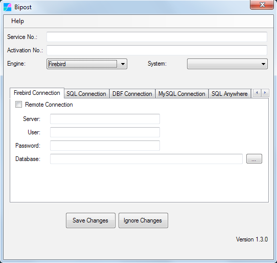
- Service No.: 36 digit number, it may look like this:
a1bcd23e-4fa5-67b8-cd9e-f0123abc4567 - Activation No.: 24 digit number, it may look like this:
5990ab12c3de45f6a78bc90d - Engine:
Firebird - System:
Custom...
| Firebird Connection | ||
|---|---|---|
| Remote Connection | Leave unchecked | Enable ONLY when biPost.exe is not located on Firebird Server. |
| Server | Leave blank | Use ONLY when Remote Connection is enabled: Type IP or name of Firebird Server. |
| Password | Your SYSDBA password | |
| Database | Location of your .FDB file |
General Settings¶
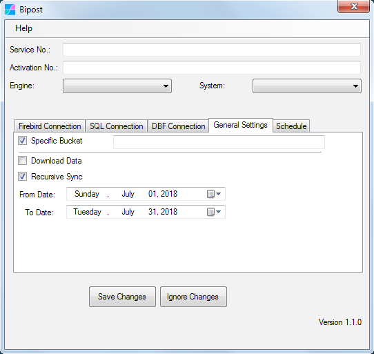
Specific Bucket:¶
-
Enter your Bucket Name. It may look like this:
bipostdata-123456789012 -
It is available on your AWS Account \ CloudFormation Stack.
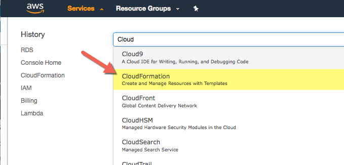
Download Data¶
-
Enable to download data from AWS Aurora to on-premises.
-
Downloaded data will be available on
%localappdata%/biPost/out_Windows folder. -
Update/insert data to Firebird by enabling Process Data check box.
-
More about downloading data check here --> Sync back to Windows
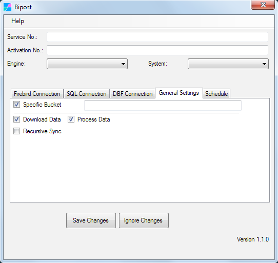
Recursive Sync¶
-
Optimize upload by extracting and uploading one day at a time for a given date range.
-
Very useful to upload historic data and big data sets.
-
Always use along with customData.json so you can configure the date field to use for each table.
-
When turned off it automatically sets today as start and end date using your system clock.
Schedule¶
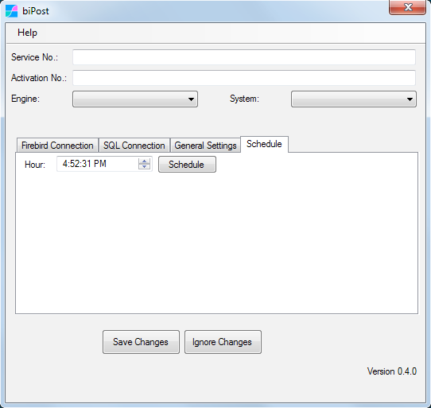
If you want automated execution of Bipost Sync, then set the Hour desired and click Schedule.
This will create a Windows Task that will run daily. If you want a different schedule, then open Windows Task Scheduler as follows.
Control Panel \ Administrative Tools:
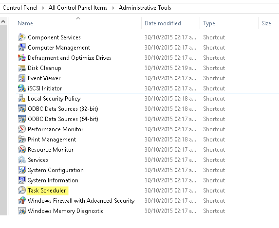
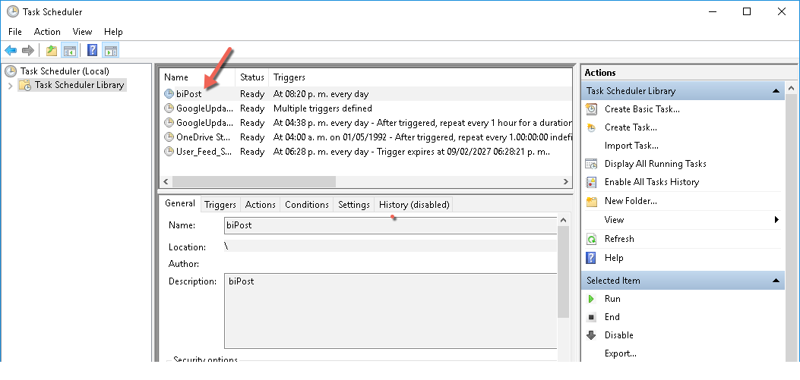
If you manually create a task to run biPost then use argument: post
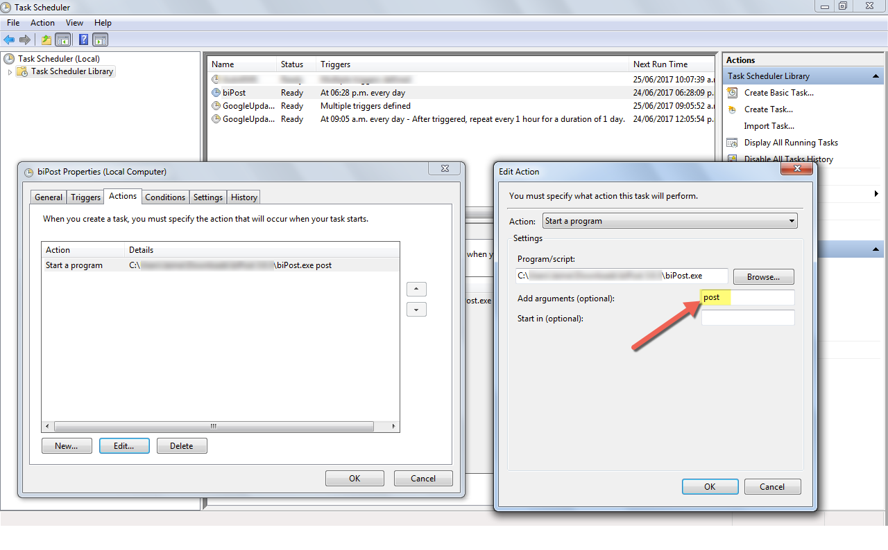
Check for Updates¶
New versions of Bipost Sync can be checked using Help \ Check for Updates.
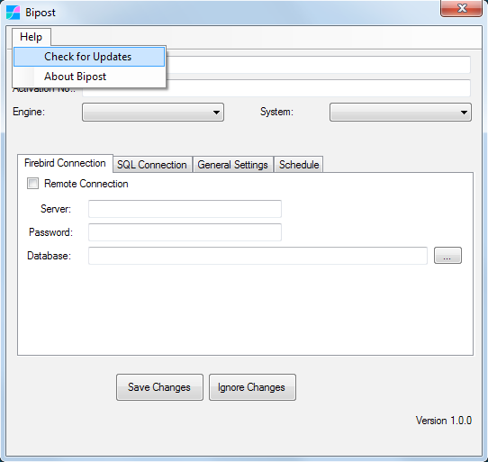
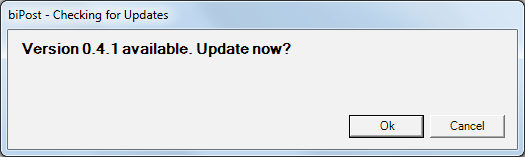
Sync multiple databases¶
If you are going to synchronize two or more databases from the same Windows host, create separate Bipost Sync folders for each database. Then customize each folder with the desired data set as explained here.
Use Cases¶
Many legacy and critical mission systems use Firebird SQL.
Microsip ERP, Aspel and ERP Yakare are examples of systems built with Firebird. Independent software vendors that have tested Bipost Sync now use it with their customers to achieve sales & financial consolidation and enable cloud Business Intelligence with Google Data Studio.
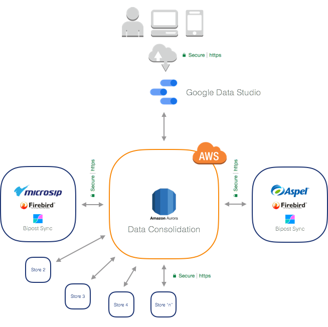